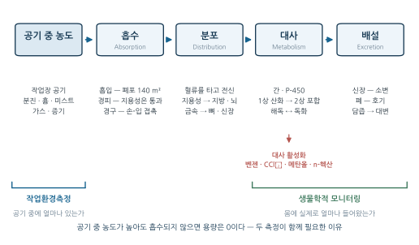
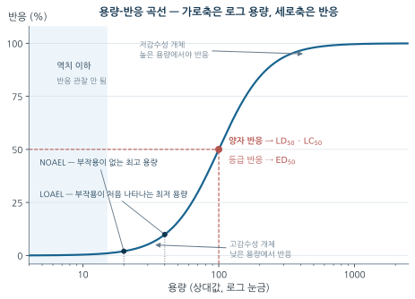
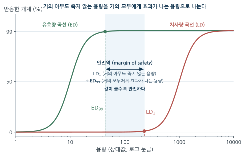
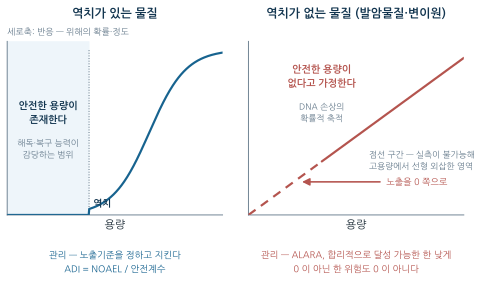
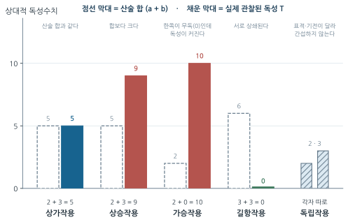

4주차. 산업독성학 I — 독성학의 원리
용량-반응 관계, 흡수·분포·대사·배설(ADME), 독성의 분류와 상호작용, 발암성
학습목표
이 주를 학습한 후 여러분은 다음을 할 수 있어야 합니다:
- 위험(Hazard)과 위험성(Risk)을 구분하고, 노출 관리가 위험성 저감의 핵심인 이유를 설명할 수 있다
- 유해물질의 세 가지 침입 경로와 체내 동태(ADME) 각 단계의 의미를 설명할 수 있다
- 생체전환이 해독인 동시에 독화(대사 활성화)일 수 있음을 대사 경로의 예로 설명할 수 있다
- 용량-반응 곡선을 해석하고 LD₅₀·LC₅₀·ED₅₀·TD₅₀, NOAEL·LOAEL·NOEL을 구분할 수 있다
- 역치 효과와 비역치 효과를 구분하고, 안전계수·ADI·인체 안전용량(SHD)을 계산할 수 있다
- 급성/만성, 국소/전신 독성을 구분하고 잠복기 개념을 직업병 인식에 적용할 수 있다
- 독성물질의 상호작용 5가지(상가·상승·가승·길항·독립)를 수치와 개념으로 판정할 수 있다
- 발암성 분류 체계(IARC, ACGIH, 고용노동부)를 비교하고 발암·변이원·생식독성의 관계를 설명할 수 있다
1. 독성학은 무엇을 묻는 학문인가 · 유해물질은 어떻게 들어와 어떻게 나가는가 (ADME)
1.1 독성학은 무엇을 묻는 학문인가
하나의 문장에서 출발하기
독성학(Toxicology)은 화학물질이 생체에 미치는 유해작용을 연구하는 학문이다. 산업위생에 독성학이 필요한 이유는 단순하다 — 1주차에서 본 AREC 순환의 인식과 평가는 “이 물질이 무엇을, 얼마나, 어떤 경로로 일으키는가”에 답할 수 있어야 작동하기 때문이다. 그리고 독성학 전체는 하나의 문장에 압축되어 있다.
“모든 물질은 독이다. 독이 아닌 물질은 없다. 용량만이 독과 약을 구분한다.” — 파라셀수스(Paracelsus, 1493–1541)
이 문장은 두 방향을 동시에 말한다. 어떤 물질도 그 자체로 안전하지 않고 (필수 미량원소인 철·아연·구리조차 과량에서는 해롭다), 어떤 물질도 그 자체로 위험하지 않다. 문제는 얼마나 몸에 들어왔는가이다. 곧 독성은 물질의 속성이 아니라 물질과 용량의 관계이며, 이 관계를 다루는 것이 §2.1의 용량-반응 개념이다.
위험(Hazard)과 위험성(Risk)
파라셀수스의 원리를 실무 언어로 옮기면 위험과 위험성의 구분이 된다. 일상어에서는 거의 같은 뜻이지만 산업위생에서는 전혀 다른 개념이다.
- 위험(Hazard)
- 물질이 유해한 영향을 일으킬 수 있는 잠재적 능력. 물질 고유의 특성이며 노출과 무관하게 존재한다.
- 위험성(Risk)
- 특정 상황에서 유해한 영향이 실제로 발생할 가능성과 그 심각도를 함께 고려한 개념.
\[ \text{위험성(Risk)} \propto \text{위험(Hazard)} \times \text{노출(Exposure)} \tag{5.1}\]
석면 시멘트 보드는 석면을 함유하므로 위험이 존재한다. 그러나 손상되지 않고 밀폐된 상태라면 섬유가 방출되지 않아 노출이 거의 없고, 위험성은 낮다. 반면 석면 단열재 제거 작업 중에는 섬유가 대량 방출되어 위험성이 매우 높아진다. 석면이라는 물질의 위험은 두 경우에 완전히 동일하다.
방정식 5.1 의 구조가 산업위생의 존재 이유를 설명한다. 물질의 위험(독성)은 화학의 성질이므로 산업위생이 바꿀 수 없지만 노출은 바꿀 수 있다. 노출을 0으로 만들면 위험성도 0이 된다 — 이것이 관리 위계의 논리이고, 9~10·13주차(관리 대책) 전체의 전제다.
직업성 손상과 직업병 — 시간이라는 변수
독성학이 사고 예방과 근본적으로 다른 지점은 시간이다.
| 구분 | 직업성 손상 (Occupational Injury) | 직업병 (Occupational Disease) |
|---|---|---|
| 시간 요인 | 사고와 손상이 거의 동시에 발생 | 노출 후 질병 발생까지 시간 지연 (수분~50년) |
| 원인-결과 관계 | 명확하고 직접적 | 불명확하고 간접적 |
| 손상 부위 | 에너지가 작용한 부위에 국한 | 노출 부위와 다른 곳에서 발생 가능 |
| 용량 개념 | 단일 사건 | 누적 용량 또는 역치 개념 적용 |
일산화탄소 중독은 수분, 용제 중독은 수 시간, 금속 중독은 수일~수개월, 소음성 난청은 수년, 석면 관련 질환은 15~50년(중피종은 평균 30~40년)이다.
잠복기가 길수록 근로자도 관리자도 노출과 질병을 연결짓기 어렵다. 1주차에서 “근로자가 불평하지 않는다고 안전한 것은 아니다”라고 한 이유가 여기에 있다. 잠복기가 긴 물질일수록 측정 기록이 사후에 인과관계를 입증하는 거의 유일한 근거가 된다.
1.2 유해물질은 어떻게 들어와 어떻게 나가는가 (ADME)
화학물질이 인체에 영향을 미치려면 먼저 체내로 흡수되어야 한다. 공기 중에 아무리 고농도로 존재해도 흡수되지 않으면 용량은 0이다. 흡수된 물질은 흡수(Absorption) → 분포(Distribution) → 대사(Metabolism) → 배설(Excretion)의 네 단계를 거치며, 이 네 글자를 따 ADME라 부른다.

그림 5.1 에는 이 과목의 두 축이 함께 있다. 작업환경측정(2~3주차)은 왼쪽 끝, 곧 “공기 중에 얼마나 있는가”를 재고, 생물학적 모니터링(11주차)은 오른쪽, 곧 “실제로 몸에 얼마나 들어왔는가”를 잰다. 두 방법이 함께 필요한 이유는 ADME 과정 자체가 개인·작업 강도·경로에 따라 다르기 때문이다.
흡수 (Absorption) — 세 개의 문
작업장에서 화학물질이 체내로 들어오는 경로는 흡입·경피·경구 세 가지다.
① 흡입(Inhalation) — 가장 중요한 경로다. 폐포의 표면적이 약 140 m²로 넓어 흡수가 빠르고, 사람은 생존을 위해 작업장 공기와 지속적으로 접촉하며, 많은 작업장 물질이 휘발되거나 분진화되어 공기 중에 존재한다. 흡입되는 형태는 분진 · 미스트 · 흄 · 가스 · 증기로 나뉜다(1주차).
② 경피 흡수(Dermal Absorption) — 피부는 완전한 방어벽이 아니며, 특히 지용성 물질은 지질층을 그대로 통과한다. 피부를 통한 유해작용은 직접 흡수(농약, 페놀), 부식 작용(산, 염기, 페놀), 탈지 작용(유기용제), 알레르기 유발(니켈, 크롬, 에폭시수지), 광감작(크레오소트, 역청)으로 나타난다. 경피 흡수가 중요한 이유는 공기 중 농도 측정으로는 잡히지 않는 노출이기 때문이다. 공기 중 농도가 노출기준 이하여도 손으로 용제를 다루면 체내 용량은 클 수 있으며, 이런 물질에 별도의 피부 흡수 표기가 붙는 배경이 여기에 있다(3주차).
③ 경구 섭취(Ingestion) — 오염된 손으로 음식을 섭취하거나, 작업복의 분진이 재비산하거나, 음료수병에 화학물질을 보관하는 식의 간접 경로가 문제다. 세 경로 중 유일하게 작업 수칙과 위생 설비로 거의 완전히 차단할 수 있는 경로다.
분포 (Distribution)
흡수된 물질은 혈류를 타고 전신으로 운반된다. 어디에 모이는가는 물질의 성질이 결정한다.
- 지용성 물질: 지방조직, 뇌, 신경계에 축적 → 유기용제가 중추신경을 표적으로 삼는 이유
- 무기금속: 특정 장기에 선택적 축적 (납 → 뼈, 카드뮴 → 신장)
분포의 선택성이 곧 표적장기(target organ) 개념의 출발점이다. 노출 부위와 손상 부위가 다를 수 있다는 표 5.1 의 서술이 여기서 기전으로 설명된다.
대사 / 생체전환 (Metabolism, Biotransformation)
주로 간에서 일어나며, 지용성 물질을 수용성으로 바꾸어 배설하기 쉽게 만드는 과정이다.
| 단계 | 반응 유형 | 효소 | 결과 |
|---|---|---|---|
| 1상 반응 | 산화, 환원, 가수분해 | Cytochrome P-450 | 극성 증가 |
| 2상 반응 | 포합 (글루쿠론산화, 황산화) | 전이효소 | 수용성 증가 → 배설 용이 |
여기까지만 보면 생체전환은 해독 과정이다. 그런데 반대 방향도 존재한다.
일부 물질은 대사 과정에서 오히려 독성이 증가한다. 이를 대사 활성화라 한다.
- 벤젠 → 벤젠에폭사이드, 하이드로퀴논 (골수 독성)
- 사염화탄소(CCl₄) → 트리클로로메틸 라디칼(•CCl₃) (간 독성)
- 메탄올 → 포름알데하이드 → 포름산 (시신경 독성)
- n-헥산 → 2,5-헥산디온 (말초신경 독성)
이 경우 모물질보다 대사산물이 더 위험하다. 그래서 독성은 화학식만으로 예측할 수 없고, 관리는 “무엇이 들어왔는가”만이 아니라 “몸 안에서 무엇으로 바뀌는가”까지 알아야 한다. 개별 물질의 대사 경로는 5주차에서 다룬다.
대사 활성화는 개인차의 원인이기도 하다. P-450 계열 효소의 활성은 유전적으로 다르고 음주·약물·다른 화학물질에 의해 유도되거나 억제된다. 같은 농도에 노출된 두 근로자가 다른 결과를 보이는 이유의 상당 부분이 이 단계에서 갈린다.
배설 (Excretion)
| 배설 경로 | 주요 물질 | 특징 |
|---|---|---|
| 신장(소변) | 수용성 물질, 대사산물 | 가장 중요한 배설 경로 |
| 폐(호기) | 휘발성 물질 | 아세톤, 알코올, 용제 |
| 간(담즙→대변) | 고분자 물질 | 일부는 장에서 재흡수됨 |
| 기타 | 땀, 모발, 모유 | 소량 |
배설 경로를 아는 것은 실무적으로 중요하다. 생물학적 모니터링의 시료가 이 표에서 나오기 때문이다 — 소변 중 대사산물, 호기 중 용제, 혈액 중 모물질. 어떤 시료를 언제 채취해야 하는가는 그 물질의 배설 경로와 반감기가 결정한다(11주차).
2. 용량-반응 관계 · 역치가 있는 독성과 없는 독성 · 독성의 분류 — 시간과 범위라는 두 축
2.1 용량-반응 관계
용량이란 무엇인가
용량(Dose)은 흡수된 화학물질의 양이며, 가장 단순한 형태는 다음과 같다.
\[ \text{용량(Dose)} = \text{노출 농도(Concentration)} \times \text{노출 시간(Duration)} \tag{5.2}\]
실제 용량에는 호흡량(작업 강도가 높으면 분당 환기량이 늘어 같은 농도에서도 흡수량이 커진다), 호흡 방식(코 호흡과 입 호흡은 상기도 여과 효과가 다르다), 비직업적 노출(흡연, 생활환경)이 추가로 개입한다. 즉 같은 작업장 농도가 모든 근로자에게 같은 용량을 뜻하지 않는다. 이것이 작업환경측정만으로 충분하지 않고 생물학적 모니터링이 필요한 이유다.
용량-반응 곡선의 두 얼굴
용량이 증가할수록 반응이 커지는 관계를 그린 것이 용량-반응 곡선이다. 그런데 “반응”을 무엇으로 세는가에 따라 곡선의 의미가 달라진다.
등급 반응(Graded Response)은 한 개체에서 나타나는 반응의 정도(강도) — “얼마나 심한가”를 센다. 양자 반응(Quantal Response)은 집단 내에서 특정 반응을 나타내는 개체의 비율 — “몇 명이 그렇게 되는가”를 센다.

두 곡선 모두 S자형(sigmoid)이고 가로축이 로그 용량이라는 점에 주의하자. S자형이 나오는 이유는 집단 내 감수성이 정규분포에 가깝게 퍼져 있기 때문이다 — 아주 낮은 용량에서 반응하는 소수의 고감수성 개체와 아주 높은 용량에서야 반응하는 소수의 저감수성 개체가 양 끝의 완만한 부분을 만든다.
Hatch는 노출량이 커질 때 기관의 기능이 한 번에 무너지지 않고 세 단계를 거친다고 보았다. 항상성 유지 단계에서는 정상 범위 안에서 적응이 일어나 겉으로 변화가 없고, 보상 단계에서는 기능은 유지되지만 그 대가로 생리적 부담이 커지며(잠재적 장해), 고장(파탄) 단계에 이르면 기능이 상실되어 질병이 된다. 생물학적 모니터링과 건강진단이 겨냥하는 것은 아직 되돌릴 수 있는 둘째 단계다.
급성 독성 지표 — 무엇의 50%인가
| 용어 | 정의 | 단위 | 세는 기준 |
|---|---|---|---|
| LD₅₀ | 반수치사량: 실험동물 50%가 사망하는 용량 | mg/kg | 사망 (비가역) |
| LC₅₀ | 반수치사농도: 실험동물 50%가 사망하는 농도 | ppm, mg/m³ | 사망 (비가역) |
| TD₅₀ | 중독량: 50%에서 중독(독성반응)이 나타나는 용량 | mg/kg | 중독 (사망은 아니나 유해) |
| ED₅₀ | 반수유효량: 50%에서 관찰 가능한 가역적 반응이 나타나는 용량 | mg/kg | 가역적 반응 |
네 지표를 가르는 기준은 하나다 — 무엇을 기준으로 50%를 세는가.
“독성을 초래하지는 않으면서 대상의 50%에서 관찰 가능한 가역적 반응이 나타나는 작용량”은 TD₅₀이 아니라 ED₅₀이다. TD₅₀은 이미 독성반응이 나타난 용량이다. 개념의 순서는 ED₅₀ < TD₅₀ < LD₅₀ — 가역적 반응이 먼저, 독성이 다음, 사망이 마지막이다.
세 물질의 경구 LD₅₀이 에탄올 10,000 mg/kg, DDT 100 mg/kg, 다이옥신(TCDD) 0.01 mg/kg이다.
- 독성이 강한 순서로 나열하라.
- 체중 70 kg에 같은 감수성이 적용된다고 가정할 때 각 물질의 LD₅₀에 해당하는 총량은?
(1) 다이옥신 > DDT > 에탄올
LD₅₀은 “50%를 죽이는 데 필요한 용량”이므로 값이 작을수록 적은 양으로 죽는다 = 독성이 강하다. 독성의 세기와 LD₅₀ 값은 반비례한다.
(2) 총량 = LD₅₀ × 체중
- 에탄올: \(10{,}000 \times 70 = 700{,}000\ \text{mg} = 700\ \text{g}\)
- DDT: \(100 \times 70 = 7{,}000\ \text{mg} = 7\ \text{g}\)
- 다이옥신: \(0.01 \times 70 = 0.7\ \text{mg}\)
에탄올은 수백 g이 필요하지만 다이옥신은 1 mg 미만이다.
주의: LD₅₀은 급성 치사독성만을 나타낸다. 만성 노출, 발암성, 감작성은 전혀 반영되지 않으므로 LD₅₀이 크다고 “안전한 물질”이라 말할 수 없다.
만성 독성 지표 — 어디부터 해로운가
급성 지표가 “얼마나 세게 죽이는가”를 물었다면, 만성 지표는 “어디까지가 무해한가”를 묻는다. 노출기준 설정의 출발점이 되는 것은 이쪽이다.
| 용어 | 정의 | 활용 |
|---|---|---|
| NOAEL | 무관찰부작용수준: 부작용이 관찰되지 않는 최고 용량 | 노출기준 설정의 기초 |
| LOAEL | 최소관찰부작용수준: 부작용이 처음 관찰되는 최저 용량 | NOAEL을 구할 수 없을 때의 대체 지표 |
| NOEL | 무관찰영향수준: 치사·발병·병태생리학적 변화가 모든 실험대상에서 관찰되지 않는 수준 | 안전하다고 간주되는 용량 |
세 지표에 관해 개념적으로 분명히 해 둘 점이 셋 있다.
- NOAEL과 LOAEL은 실험이 설정한 용량군 사이의 값이다. 10, 30, 100 mg/kg으로 시험해 30에서 영향이 없고 100에서 있었다면 NOAEL = 30, LOAEL = 100이다. 진짜 역치는 그 사이에 있으며, 설계가 촘촘할수록 두 값이 가까워진다.
- NOEL은 유효량이 아니다. NOEL은 “아무 영향도 없는 수준”이고 유효량(ED)은 “반응이 나타나는 수준”으로, 정반대의 개념이다. 같은 뜻의 용어로 SNARL(Suggested No-Adverse-Response Level)도 쓰인다.
- 급성 독성시험에서는 NOEL을 얻을 수 없다. 급성시험이 주는 정보는 치사율, 눈·피부 자극성 등이다. NOEL·NOAEL은 아급성 또는 만성 독성시험에서 구해진다 — “영향이 없다”를 말하려면 충분히 오래 관찰해야 하기 때문이다.
안전역과 인체 안전용량
안전역(Margin of Safety)은 “듣기 시작하는 용량”과 “죽기 시작하는 용량” 사이의 간격, 곧 화학물질의 독성범위를 나타낸다.
\[\text{안전역} = \frac{\mathrm{LD}_1}{\mathrm{ED}_{99}} \tag{5.3}\]
분자는 치사량의 하한(1%가 사망하는 용량), 분모는 유효량의 상한(99%에서 효과가 나는 용량)으로, 가장 보수적인 두 값을 골라 비교하는 구조이며 값이 클수록 안전하다. “거의 아무도 죽지 않는 용량”을 “거의 모두에게 효과가 나는 용량”으로 나눈다로 기억하면 분자·분모를 뒤집을 일이 없다.

그림 5.3 에서 두 곡선이 멀리 떨어져 있을수록 안전역이 크다. 곡선이 겹쳐 오는 물질은 “듣는 용량”과 “죽는 용량”이 가까워 취급 여유가 거의 없다는 뜻이다.
인체 안전용량(SHD, Safe Human Dose)은 동물실험에서 구한 역치량(ThD₀, 무독성 최대량)을 사람에게 외삽한 값이다.
\[\mathrm{SHD} = \frac{\mathrm{ThD}_0 \times W}{\mathrm{SF}} \tag{5.4}\]
\(\mathrm{ThD}_0\)는 역치(mg/kg), \(W\)는 사람의 표준 몸무게(kg), \(\mathrm{SF}\)는 안전인자다. 식의 구조를 읽으면 필요한 값이 곧바로 나온다 — 역치·체중·안전인자 셋이며, 독성량(TD)이나 배설률은 들어가지 않는다. 다만 결과를 공기 중 농도로 환산하려면 노출시간·호흡률·폐흡수비율이 추가로 필요하다. 체내 용량(mg)을 농도(mg/m³)로 되돌리려면 “몇 m³를 마셨고 그중 몇 %가 흡수되는가”를 알아야 하기 때문이다.
어떤 유기용제의 동물실험 역치량이 \(\mathrm{ThD}_0 = 5.0\ \text{mg/kg}\)이다. 안전인자 SF = 100, 표준 체중 W = 70 kg으로 한다.
- 인체 안전용량(SHD)을 구하라.
- 1일 8시간 흡입 노출 시 허용 가능한 공기 중 농도를 추정하라. 단, 작업 중 호흡률 1.25 m³/h, 폐 흡수율 80%로 본다.
(1) 하루에 몸 안으로 들어와도 무방하다고 보는 총량이다. \[\mathrm{SHD} = \frac{\mathrm{ThD}_0 \times W}{\mathrm{SF}} = \frac{5.0 \times 70}{100} = 3.5\ \text{mg/day}\]
(2) 8시간 동안 마시는 공기 부피는 \(V = 1.25 \times 8 = 10\ \text{m}^3\)이고, 농도를 \(C\) (mg/m³)라 하면 흡수량 \(C \times V \times 0.8\)이 SHD와 같아야 하므로
\[C = \frac{\mathrm{SHD}}{V \times 0.8} = \frac{3.5}{10 \times 0.8} = 0.44\ \text{mg/m}^3\]
해석: 동물의 무독성 용량 하나에서 출발했지만, 사람에게 적용하려면 안전인자(100)로 나누고, 공기 농도로 되돌리려면 호흡률·노출시간·흡수율을 거쳐야 한다. 이 과정이 노출기준이 만들어지는 논리의 축소판이다(3주차).
2.2 역치가 있는 독성과 없는 독성
역치 효과와 안전계수
대부분의 독성물질은 역치(Threshold) 이하의 용량에서는 유해한 영향을 나타내지 않는다. 인체가 일정 수준까지 화학물질을 해독하거나 손상을 복구할 수 있기 때문이며(§1.2), 간독성·신장독성·자극성 물질이 여기에 속한다. 이런 물질에는 안전계수를 적용해 1일 섭취허용량(ADI) 또는 참고 용량(RfD)을 설정할 수 있다.
\[ \text{ADI} = \frac{\text{NOAEL}}{\text{안전계수}} \tag{5.5}\]
안전계수 100은 임의의 숫자가 아니라 두 종류의 불확실성을 각각 10배로 잡은 결과다 — 종간 차이(동물 → 인간) 10배와 개인간 차이(민감한 개인 보호) 10배를 곱한 값이다.
어떤 물질의 만성 독성시험에서 투여군을 5, 20, 60, 200 mg/kg/day로 설정했다. 60 mg/kg/day 군에서 간효소 수치 상승이 관찰되었고, 20 mg/kg/day 군은 대조군과 차이가 없었다.
- NOAEL과 LOAEL은 각각 얼마인가?
- 총 안전계수 100을 적용한 ADI와, 체중 60 kg 성인의 1일 허용 총량은?
- 가장 낮은 용량군에서도 영향이 나타났다면 NOAEL을 어떻게 처리해야 하는가?
(1) 부작용이 관찰되지 않은 최고 용량이 NOAEL, 처음 관찰된 최저 용량이 LOAEL이다. NOAEL = 20 mg/kg/day, LOAEL = 60 mg/kg/day
(2) \(\text{ADI} = 20 / 100 = 0.2\ \text{mg/kg/day}\), 1일 허용 총량 \(= 0.2 \times 60 = 12\ \text{mg/day}\)
(3) 모든 투여군에서 영향이 나타나면 NOAEL을 구할 수 없다. 이때는 LOAEL을 출발점으로 삼되, “영향이 없는 수준”이 아니라 “가장 낮게 영향이 확인된 수준”에서 시작하는 만큼 추가 불확실계수를 곱해 더 보수적으로 정한다. 근본적으로는 더 낮은 용량군을 포함한 재시험이 필요하다.
개념 정리: 진짜 역치는 20과 60 사이 어딘가에 있지만 실험은 그것을 알려주지 않는다. 그래서 확인된 무영향 용량 중 가장 높은 값을 취하고, 그 위에 안전계수를 얹어 불확실성을 흡수한다.
비역치 효과
일부 물질, 특히 발암물질(carcinogen)과 변이원(mutagen)에 대해서는 역치가 없다고 가정한다. DNA 손상은 단 하나의 분자로도 일어날 수 있고, 손상된 세포 하나가 복구되지 않고 분열하면 그것이 암의 시작이 될 수 있기 때문이다. 따라서 안전한 노출 수준이 존재하지 않는다고 보고, 노출을 합리적으로 달성 가능한 한 낮게 유지한다(ALARA 원칙, As Low As Reasonably Achievable).
| 구분 | 역치 효과 | 비역치 효과 |
|---|---|---|
| 개념 | 안전한 용량이 존재한다 | 안전한 용량이 없다고 가정한다 |
| 기전 | 해독·복구 능력이 감당하는 범위 | DNA 손상의 확률적 축적 |
| 대표 물질 | 대부분의 자극제·전신독성물질 | 발암물질, 변이원 |
| 저용량 영역 | 반응이 0 | 용량에 비례하는 확률 (선형 외삽) |
| 관리 원칙 | 노출기준 설정과 준수 | ALARA — 가능한 한 낮게 |

그림 5.4 의 두 그림에서 고용량 영역의 모양은 크게 다르지 않다. 차이는 저용량 영역에서만 나타나고, 관리 원칙이 갈리는 것도 바로 그 구간이다.
저용량 영역에서 발암 위험을 실제로 측정하는 것은 사실상 불가능하다 — 1만 명 중 1명의 초과 위험을 통계적으로 검출하려면 감당할 수 없는 규모의 연구가 필요하다. 그래서 독성학은 고용량 실험 결과를 저용량으로 선형 외삽하고, 안전한 쪽으로 틀리기 위해 역치가 없다고 가정한다. 곧 비역치는 “역치가 없음이 증명되었다”가 아니라 “있는지 알 수 없으므로 없다고 놓고 관리한다”는 뜻이다.
개인차와 감수성
같은 용량에 노출되어도 사람마다 반응이 다르다. 같은 농도의 작업장에서 어떤 사람은 정상, 어떤 사람은 적응 반응, 어떤 사람은 이미 질병 상태에 있을 수 있다 — 그림 5.2 의 S자 곡선에서 양 끝이 완만해지는 자리가 바로 이 개인차의 자리다.
고감수성 개인을 만드는 요인은 셋이다 — 유전적 대사 차이(효소 결핍이나 활성 변이, §1.2), 기저 질환(간질환·신장질환은 대사와 배설을 동시에 떨어뜨린다), 생애 단계(임산부, 어린이, 노인).
그래서 노출기준은 평균인이 아니라 민감한 개인을 보호하도록 설정하며, 안전계수에 개인차 10배를 반영한다(§2.2). 다만 “모든 개인”을 보호하는 기준은 원리적으로 만들 수 없다 — 노출기준 이하라도 특이 감수성자에게는 영향이 나타날 수 있으며, 이것이 노출기준을 “안전과 위험을 가르는 선”으로 읽어서는 안 되는 이유다(3주차).
2.3 독성의 분류 — 시간과 범위라는 두 축
지금까지 용량을 축으로 독성을 보았다면, 독성은 시간과 작용 범위로도 나뉜다.
| 구분 | 급성 독성 (Acute) | 만성 독성 (Chronic) |
|---|---|---|
| 노출 양상 | 단회 또는 단기간의 고농도 노출 | 장기간 반복되는 저농도 노출 |
| 발현 시점 | 노출 직후~수시간 | 수개월~수십 년 |
| 대표 지표 | LD₅₀, LC₅₀ | NOAEL, LOAEL, NOEL |
| 인과관계 | 명확 — 노출과 증상이 붙어 있다 | 불명확 — 잠복기가 끼어든다 |
| 예 | 고농도 일산화탄소 중독, 황화수소 급성 노출 | 진폐증, 직업성 암, 만성 용제 뇌병증 |
두 유형은 관리 방식이 다르다. 급성 독성은 한 번의 높은 농도가 문제이므로 최고노출기준(Ceiling)이나 단시간 기준으로, 만성 독성은 누적 용량이 문제이므로 8시간 시간가중평균(TWA)으로 관리한다(3주차). 벤젠처럼 급성으로 중추신경 억제를, 만성으로 조혈장애와 백혈병을 일으키는 식으로 한 물질이 두 성격을 함께 갖는 경우도 흔하다.
| 구분 | 국소 독성 (Local) | 전신 독성 (Systemic) |
|---|---|---|
| 작용 지점 | 물질이 처음 접촉한 부위 | 흡수·분포를 거쳐 도달한 표적장기 |
| 흡수 필요성 | 흡수되지 않아도 작용한다 | 반드시 흡수되어야 한다 |
| 대표 작용 | 자극, 부식, 접촉피부염 | 신경독성, 간독성, 신장독성, 조혈독성 |
| 예 | 산·염기에 의한 피부 화상, 암모니아의 기도 자극 | 납의 조혈기 영향, n-헥산의 말초신경병증 |
이 구분은 유해물질을 생리적 작용으로 분류할 때 그대로 이어진다. 자극제는 접촉 부위의 국소 작용이 중심이고, 질식제·마취제·전신중독제는 흡수 이후의 전신 작용이 중심이다. 분류 체계의 전모와 물질별 각론은 5주차에서 다룬다.
국소·전신은 배타적 범주가 아니다. 황화수소는 눈·기도를 자극하는 국소 작용과 세포 호흡효소를 저해하는 전신 작용을 함께 가지고, 페놀은 피부를 부식시키면서(국소) 동시에 흡수되어 전신 독성을 일으킨다. 분류는 물질에 라벨을 붙이는 작업이 아니라 그 물질의 어떤 작용을 지금 이야기하고 있는가를 명확히 하는 도구다.
또 하나의 축은 가역성이다. 자극에 의한 결막염이나 용제의 마취 작용은 노출이 끝나면 회복되지만(가역), 섬유화된 폐나 손상된 DNA는 되돌아오지 않는다(비가역). 비가역 독성은 “기준 이하로 관리한다”가 아니라 “노출 자체를 없앤다”는 접근을 요구한다.
3. 유해물질의 상호작용 · 발암성 · 변이원성 · 생식독성
3.1 유해물질의 상호작용
다섯 가지 유형
실제 작업장 공기에는 여러 물질이 동시에 존재한다. 도장 작업장에는 톨루엔·크실렌·에틸벤젠·초산에틸이 함께 있고, 용접 흄에는 여러 금속이 섞여 있다. 이때 두 물질이 함께 작용해 나타나는 독성은 각각의 독성을 단순히 더한 값과 같지 않을 수 있다. 두 물질의 상대적 독성수치를 \(a\), \(b\), 혼합 시 관찰되는 독성을 \(T\)라 하면 다섯 유형이 된다.
| 유형 | 관계 | 수치 예시 | 개념 |
|---|---|---|---|
| 상가작용 (additive) | \(T = a + b\) | 2 + 3 = 5, 3 + 3 = 6 | 각 물질 독성의 산술 합 |
| 상승작용 (synergism) | \(T > a + b\) | 2 + 3 = 9, 2 + 5 = 9 | 합보다 큰 독성 |
| 가승작용 (potentiation, 잠재작용) | \(b = 0\) 인데 \(T \gg a\) | 2 + 0 = 10, 3 + 0 = 10 | 독성물질 + 무독한 물질 → 독성 증가 |
| 길항작용 (antagonism) | \(T < a + b\) | 3 + 3 = 0 | 서로 상쇄 |
| 독립작용 (independent) | 각자 따로 작용 | 질산 + 카드뮴 | 표적·기전이 달라 서로 간섭하지 않음 |

그림 5.5 을 왼쪽에서 오른쪽으로 읽으면 판정 순서가 그대로 나온다 — 관찰값이 산술 합과 같으면 상가, 크면 상승, 작으면 길항이고, 한쪽 물질의 독성이 애초에 0인데도 커졌다면 가승이다.
- 상가작용: 두 물질이 모두 독성을 가지며, 합이 그대로 나온다.
- 가승작용: 한쪽이 무독(0)인데도 다른 쪽의 독성이 커진다.
즉 “독성이 강한 화학물질과 무독한 화학물질이 상호작용하여 독성이 증가하는 현상”은 상승작용이 아니라 가승작용이다. 두 유형을 가르는 것은 결과의 크기가 아니라 한쪽이 독성을 가지고 있었는가이다. 가승작용의 전형적 기전은 무독한 물질이 대사 효소를 억제하거나 유도하여 독성물질의 대사 경로를 바꾸는 것이다 — §1.2의 대사 활성화가 여기서 다시 등장한다.
길항작용의 네 가지 기전
길항은 “왜 상쇄되는가”에 따라 넷으로 나뉜다. ADME의 어느 단계에서 개입하는지를 보면 구조가 잡힌다.
| 유형 | 기전 | ADME상의 위치 |
|---|---|---|
| 화학적 길항작용 | 두 물질이 서로 반응하여 저독성 물질을 형성 | 흡수 이전 또는 체내 반응 |
| 기능적 길항작용 | 동일한 생리적 기능에 서로 반대 방향으로 작용 | 표적장기의 효과 단계 |
| 수용체 길항작용 | 두 물질이 같은 수용체에 경쟁적으로 결합하여 독성 저하 | 표적 수용체 |
| 배분적(분배적) 길항작용 | 흡수·분포·생전환·배설에 영향을 주어 표적기관 내 축적기간이나 농도를 낮춤 | ADME 전 과정 |
배분적 길항의 전형적인 예가 이뇨제 투여로 배설을 촉진하는 것이다. 물질 자체를 중화하지도, 수용체를 막지도 않지만 표적기관에 머무는 시간과 농도를 줄여 결과적으로 독성을 낮춘다. 효소 유도를 통한 길항도 여기에 가깝다 — 어떤 물질이 다른 물질을 비활성화하는 효소를 유도하면 그 물질의 급·만성 독성이 감소한다.
상대적 독성수치가 각각 2와 3인 두 물질 A, B가 있다. 다음 결과를 상호작용 유형으로 판정하라.
- A와 B를 함께 노출시켰더니 독성이 5로 나타났다.
- A와 B를 함께 노출시켰더니 독성이 9로 나타났다.
- 독성수치 3인 물질 A에 독성이 전혀 없는 물질 C를 함께 노출시켰더니 독성이 10이 되었다.
- 독성수치 3인 두 물질을 함께 노출시켰더니 독성이 거의 나타나지 않았다.
(1) 상가작용 — \(2 + 3 = 5\)로 산술 합과 같다.
(2) 상승작용 — 산술 합 5보다 관찰값 9가 크다.
(3) 가승작용 — 한쪽(C)이 무독(0)인데 전체 독성이 3에서 10으로 커졌다. 합보다 커졌다는 점만 보면 상승작용과 닮았지만, 한쪽이 원래 독성을 가지지 않았다는 점이 결정적 차이다.
(4) 길항작용 — 관찰값이 산술 합 6보다 훨씬 작다.
판정 순서: ① 두 물질 모두 독성이 있는가? 한쪽이 0이면 곧바로 가승작용이다. ② 둘 다 독성이 있다면 관찰값과 산술 합을 비교한다 — 같으면 상가, 크면 상승, 작으면 길항. ③ 표적과 기전이 달라 애초에 간섭하지 않는다면 독립작용이다.
상호작용 개념이 실무에서 곧바로 쓰이는 곳이 혼합물의 노출평가다. 여러 물질이 같은 표적장기에 작용할 때는 상가작용을 가정해 각 물질의 노출량을 노출기준으로 나눈 값의 합으로 판정하고, 표적장기가 서로 다르면 독립작용으로 보아 각각 따로 판정한다. 계산 방법은 3주차에서 다루지만, 그 계산이 왜 그런 형태인지는 이 절의 개념에서 나온다.
3.2 발암성 · 변이원성 · 생식독성
발암물질의 특성
발암물질은 §2.2의 비역치 효과를 대표하는 물질군이며, 세 가지 특성을 공유한다. 잠복기가 길고(수년~수십 년, 석면에 의한 중피종은 평균 30~40년), 용량-반응 관계를 선형으로 가정하며(고용량 자료를 저용량으로 외삽), 역치가 없다고 가정하여 관리한다(ALARA).
발암 과정은 흔히 개시(initiation)와 촉진(promotion)으로 나누어 설명된다. 개시는 DNA에 비가역적 손상이 생기는 단계, 촉진은 손상된 세포가 증식하도록 밀어주는 단계다. 석면 노출 근로자의 폐암 위험이 흡연과 결합할 때 크게 증가하는 것이 두 단계가 겹칠 때 일어나는 일이며, §3.1의 상승작용이 발암 영역에 나타난 사례다.
세 가지 발암성 분류 체계
발암성은 여러 기관이 각각의 목적으로 분류하며, 분류 목적이 다르면 라벨도 다르다. IARC 그룹(국제암연구기관)은 규제가 아니라 증거의 강도를 분류한 과학적 평가이고, ACGIH A1~A5는 노출기준(TLV) 문서에 부기되는 권고적 분류이며, 고용노동부 1A/1B/2는 GHS 체계에 따른 법적 분류다.
| 그룹 | IARC 정의 | 예시 |
|---|---|---|
| Group 1 | 인체 발암성 확인 물질 | 석면, 벤젠, 크롬(VI), 라돈 |
| Group 2A | 인체 발암성 추정 물질 | 디젤배기가스, PCB |
| Group 2B | 인체 발암성 가능 물질 | 납, 스티렌 |
| Group 3 | 인체 발암성 미분류 | 카페인, 차(茶) |
| Group 4 | 인체 비발암성 추정 물질 | 카프로락탐 (해당 물질이 매우 드묾) |
| ACGIH | 의미 | IARC 대응(대략) | 고용노동부(GHS) |
|---|---|---|---|
| A1 | 인체 발암성 확인 물질 | Group 1 | 1A |
| A2 | 인체 발암성 의심 물질 | Group 2A | 1B |
| A3 | 동물 발암성 확인, 인체 관련성 불명 | Group 2B 부근 | 2 |
| A4 | 인체 발암성 물질로 분류 불가 | Group 3 | 미분류 |
| A5 | 인체 발암성 의심 물질이 아님 | Group 4 부근 | 미분류 |
세 체계의 대응은 대략적이며 물질마다 어긋날 수 있다 — 분류 시점이 다르고 평가 자료의 범위와 판단 기준이 다르기 때문이다. 실무에서는 세 라벨을 함께 확인하되 법적 의무는 고용노동부 분류에서 나온다는 점을 기준으로 삼는다. 국내 고시는 GHS 도입 이후 1A / 1B / 2 표기를 쓰며, 과거 ACGIH식 표기인 A1이 1A에 대응한다 — 숫자와 문자의 순서가 뒤집혔을 뿐 같은 계열의 개념이다.
IARC 그룹은 “증거가 얼마나 확실한가”를 나타내지 “얼마나 강하게 발암하는가”를 나타내지 않는다. Group 1에 함께 들어 있는 두 물질의 발암 강도는 수십 배 차이가 날 수 있다. 또한 Group 3은 “안전하다”가 아니라 “현재 자료로는 판단할 수 없다”는 뜻이며, 자료가 축적되면 상향될 수 있다. 분류는 위험(Hazard)에 대한 진술이고, 실제 관리 우선순위는 여기에 노출을 곱한 위험성(Risk)으로 결정된다(방정식 5.1).
변이원성과 생식독성
- 변이원성(Mutagenicity)
- 생식세포나 체세포의 DNA에 유전 가능한 변화를 일으키는 성질. 변이원은 발암물질과 함께 비역치 효과로 관리된다(§2.2). 체세포의 변이는 암으로, 생식세포의 변이는 다음 세대로 이어질 수 있다.
- 생식독성(Reproductive Toxicity)
- 생식 기능이나 태아 발생에 유해한 영향을 미치는 성질. 남성의 정자 형성 장애, 여성의 생리불순·불임, 유산, 기형 발생을 포함한다.
| 물질 | 보고된 생식독성 영향 |
|---|---|
| 납 | 불임, 유산, 기형 |
| 수은 | 태아 신경계 발달 장애 |
| 2-브로모프로판 | 무정자증, 무월경 |
| 이황화탄소(CS₂) | 생리불순, 정자 형성 저해 |
| 글리콜에테르 | 정자 손상, 유산 |
- 보호 대상이 노출된 본인만이 아니다. 태아는 스스로 노출을 회피할 수 없고 감수성은 성인보다 훨씬 높다. 1주차의 예측(Anticipation) 단계가 가장 강하게 요구되는 영역이다.
- 노출기준이 일반 근로자를 기준으로 설정되었을 수 있다. 기준 이하라도 임신 가능성이 있는 근로자에게는 추가적 배려가 필요하다.
세 성질은 서로 겹친다 — DNA를 손상시키는 물질은 발암성과 변이원성을 함께 갖는 경우가 많고, 그중 일부는 생식세포에 작용해 생식독성까지 나타낸다. 그래서 이 세 범주를 묶어 CMR 물질(Carcinogenic, Mutagenic, Reprotoxic)이라 부르며, 관리에서 별도의 지위를 갖는다.
요약
| 개념 | 핵심 내용 |
|---|---|
| 파라셀수스의 원리 | 용량이 독과 약을 가른다 — 독성은 물질의 속성이 아니라 물질과 용량의 관계 |
| 위험과 위험성 | Risk ∝ Hazard × Exposure. 위험은 못 바꿔도 노출은 바꿀 수 있다 |
| ADME | 흡수(흡입·경피·경구) → 분포(지용성은 지방·신경, 금속은 특정 장기) → 대사(간, 1상/2상) → 배설(신장·폐·담즙) |
| 대사 활성화 | 생체전환이 독화가 되는 경우 — 벤젠, CCl₄, 메탄올, n-헥산 |
| 급성 지표 | LD₅₀·LC₅₀(사망), TD₅₀(중독), ED₅₀(가역적 반응). 값이 작을수록 독성이 강하다 |
| 만성 지표 | NOAEL(무영향 최고용량), LOAEL(영향 최저용량), NOEL(=SNARL). 급성시험으로는 못 구한다 |
| 안전역·SHD | 안전역 = LD₁/ED₉₉ · SHD = ThD₀ × W / SF (공기 농도 환산에는 노출시간·호흡률·흡수율 추가) |
| 역치 / 비역치 | 역치: ADI = NOAEL / 안전계수(통상 100 = 종간 10 × 개인간 10) · 비역치: 발암물질·변이원, ALARA |
| 급성/만성 | 단회 고농도(Ceiling·STEL 관리) vs 누적 저농도(TWA 관리) |
| 국소/전신 | 접촉 부위 작용(자극·부식) vs 흡수 후 표적장기 작용. 배타적 범주가 아니다 |
| 상호작용 5유형 | 상가 T=a+b · 상승 T>a+b · 가승(한쪽이 무독) · 길항 T<a+b · 독립 |
| 길항 4기전 | 화학적 · 기능적 · 수용체 · 배분적(ADME에 개입) |
| 발암성 분류 | IARC 1/2A/2B/3/4(증거 강도) · ACGIH A1~A5(권고) · 고용노동부 1A/1B/2(법적, 구 A1 = 현 1A) |
| CMR | 발암성·변이원성·생식독성 — 겹치는 경우가 많고 관리상 별도 지위 |
연습문제
문제 1. 위험, 위험성, 그리고 관리 선택
한 도금 공장에서 6가 크롬 도금조를 운영한다. 두 가지 방안이 제안되었다.
- 방안 A: 도금조에 밀폐형 후드와 국소배기장치를 설치한다
- 방안 B: 근로자 전원에게 방독마스크를 지급하고 착용을 교육한다
방정식 5.1 를 이용해 두 방안이 각각 식의 어느 항에 작용하는지 설명하고, 6가 크롬이 비역치 물질이라는 점이 두 방안의 우선순위에 어떤 영향을 주는지 논하라.
정답 및 해설
두 방안 모두 노출(Exposure) 항에 작용한다. 6가 크롬의 위험(Hazard)은 물질 고유의 성질이므로 어느 방안으로도 바뀌지 않으며, 위험 자체를 바꾸려면 다른 물질로 대체하는 수밖에 없다.
비역치 물질이라는 점의 함의: 6가 크롬은 발암물질이므로 “이 농도 이하는 안전하다”고 말할 역치가 없다고 가정한다. 따라서 관리 목표는 “노출기준 이하 유지”가 아니라 ALARA — 합리적으로 달성 가능한 한 낮게여야 한다. 이 목표에서 보면 A가 명백히 우선이다. A는 발생원에서 노출을 차단해 작업장 전체 농도를 낮추므로 효과가 근로자의 행동에 의존하지 않는다. 반면 B는 개인의 올바른 착용·밀착·정화통 교체에 매번 의존하며, 마스크를 벗는 순간 노출이 그대로 발생한다. 비역치 물질일수록 “대부분의 시간 동안 잘 막힌다”로는 충분하지 않다.문제 2. ADME로 읽는 두 노출 시나리오
같은 유기용제를 사용하는 두 작업자가 있다.
- 갑: 공기 중 농도가 높은 곳에서 앉아서 하는 정밀 작업, 장갑 착용
- 을: 공기 중 농도는 갑의 절반이지만 무거운 자재를 옮기는 중노동, 맨손으로 용제 묻은 부품 취급
작업환경측정 결과만 보면 갑의 노출이 더 크다. 그러나 생물학적 모니터링에서는 을의 요중 대사산물이 더 높게 나왔다. ADME의 관점에서 이 결과를 설명하라.
정답 및 해설
흡수(A) 단계에서 두 사람의 조건이 다르기 때문이다.
- 호흡량 차이 — 을은 중노동을 하므로 분당 환기량이 크게 증가한다. 농도가 절반이어도 마시는 공기 부피가 두 배 이상이면 흡입 용량은 역전될 수 있다(방정식 5.2).
- 경피 경로의 추가 — 을은 맨손으로 용제를 취급하므로 경피 흡수가 더해진다. 유기용제는 지용성이어서 피부를 잘 통과하며, 이 경로는 공기 중 농도 측정에 전혀 잡히지 않는다.
문제 3. 상호작용의 판정과 관리
용접 작업장 공기에서 두 유해물질이 검출되었다. 실험 자료에 따르면 물질 X의 상대 독성수치는 4, 물질 Y는 0(무독)인데, 두 물질이 함께 존재할 때 관찰된 독성은 12였다.
- 이 상호작용의 유형은 무엇이며 상승작용과 어떻게 다른가?
- Y의 노출기준이 별도로 없다는 이유로 Y를 관리 대상에서 제외해도 되는가?
정답 및 해설
(1) 가승작용(potentiation, 잠재작용)이다. 한쪽 물질(Y)이 그 자체로는 독성이 없는데도 전체 독성이 4에서 12로 커졌다. 상승작용은 두 물질이 모두 독성을 가진 상태에서 합보다 큰 결과가 나오는 경우이고, 가승작용은 한쪽이 0이라는 점이 결정적으로 다르다. 결과의 크기가 아니라 “출발점에 독성이 있었는가”가 판정 기준이다.
(2) 제외해서는 안 된다. Y는 단독으로는 무해하지만 X의 독성을 3배로 키운다. 기전은 대개 대사 단계의 개입이다 — Y가 X를 해독하는 효소를 억제하거나, X를 독성 대사산물로 바꾸는 효소를 유도하는 식이다(§1.2). 따라서 관리 대상은 “독성이 있는 물질”이 아니라 작업장에 함께 존재하며 결과 독성에 기여하는 모든 물질이어야 한다. 단일 물질의 노출기준 준수만으로는 혼합 노출의 실제 위험을 담보할 수 없다.문제 4. 발암성 분류 읽기
어떤 물질의 MSDS에 “발암성: IARC Group 2B, ACGIH A3, 고용노동부 고시 구분 2”라고 적혀 있다.
- 세 라벨이 각각 무엇을 의미하는지 설명하라.
- “IARC Group 3인 물질은 Group 2B인 물질보다 덜 위험하다”는 진술은 타당한가?
- 이 물질의 관리 우선순위를 정할 때 분류 라벨만으로 충분한가?
정답 및 해설
(1) - IARC Group 2B — 인체 발암성 가능 물질. 인체 자료가 제한적이고 동물 자료도 충분하지 않은 수준의 증거. - ACGIH A3 — 동물에서 발암성이 확인되었으나 인체 관련성이 불명확하다는 권고적 분류. - 고용노동부 구분 2 — GHS 체계의 법적 분류로 발암성이 의심되는 물질에 해당한다.
세 라벨은 대략 대응하지만 평가 시점과 판단 기준이 달라 완전히 일치하지는 않는다. 법적 의무의 근거가 되는 것은 고용노동부 분류다.
(2) 타당하지 않다. IARC 그룹은 증거의 강도를 분류한 것이지 발암 강도의 순위가 아니다. Group 3은 “안전하다”가 아니라 “현재 자료로는 분류할 수 없다”는 뜻이며 자료가 쌓이면 상향될 수 있다.
(3) 충분하지 않다. 분류는 위험(Hazard)에 대한 진술이고, 실제 관리 우선순위는 여기에 노출(Exposure)을 곱한 위험성(Risk)으로 정해진다(방정식 5.1). Group 1 물질이라도 밀폐 공정에서 노출이 없다면 위험성은 낮고, Group 2B 물질이라도 고농도로 매일 흡입한다면 위험성은 높다. 분류표는 출발점이지 결론이 아니다.문제 5. 급성과 만성, 국소와 전신
다음 네 가지 건강영향을 (급성/만성) × (국소/전신)의 네 칸에 배정하고, 각 칸의 관리 접근이 어떻게 달라지는지 한 문장씩 설명하라.
- 고농도 암모니아 누출로 인한 기도 점막 손상
- 장기간 크롬 도금 작업자에게 나타난 비중격 천공
- 밀폐공간에서 일산화탄소를 흡입한 직후의 의식 소실
- 20년간 분진에 노출된 근로자의 폐 섬유화
정답 및 해설
| 국소 | 전신 | |
|---|---|---|
| 급성 | a. 암모니아 기도 자극 | c. 일산화탄소 급성 중독 |
| 만성 | b. 크롬에 의한 비중격 천공 | d. 분진에 의한 폐 섬유화 |
배정 근거: a·b는 물질이 접촉한 부위에서 손상이 일어나므로 국소, c는 흡수되어 혈액을 거쳐 전신 저산소증을 일으키므로 전신, d는 흡입된 분진이 폐포에 침착해 조직 반응을 일으킨 누적 노출의 결과다.
관리 접근의 차이:
- 급성·국소(a) — 순간 농도가 문제이므로 최고노출기준·누출 경보·비상 대응이 핵심이다.
- 급성·전신(c) — 밀폐공간 진입 절차, 산소·유해가스 사전 측정, 감시인 배치가 핵심이다.
- 만성·국소(b) — 누적 접촉을 줄이는 국소배기와 정기 건강진단(비강 검진)이 핵심이다.
- 만성·전신(d) — 8시간 TWA 관리, 노출 이력 기록, 잠복기를 고려한 추적 관찰이 핵심이다.
참고문헌
- Klaassen, C. D. (Ed.) (2019). Casarett & Doull’s Toxicology: The Basic Science of Poisons (9th ed.). McGraw-Hill.
- Cherrie, J. W., Semple, S., & Coggins, M. (2021). Monitoring for Health Hazards at Work (5th ed.). Wiley-Blackwell.
- ACGIH (2024). TLVs and BEIs: Documentation of the Threshold Limit Values and Biological Exposure Indices. ACGIH.
- IARC. Monographs on the Identification of Carcinogenic Hazards to Humans. International Agency for Research on Cancer.
- NIOSH (2019). NIOSH Pocket Guide to Chemical Hazards. DHHS (NIOSH) Publication.
- ILO (2012). Encyclopaedia of Occupational Health and Safety (4th ed.). International Labour Organization.
- 고용노동부 (2024). 화학물질 및 물리적 인자의 노출기준 (고용노동부 고시).
- 안전보건공단 (2023). 산업독성학 교육자료. KOSHA.